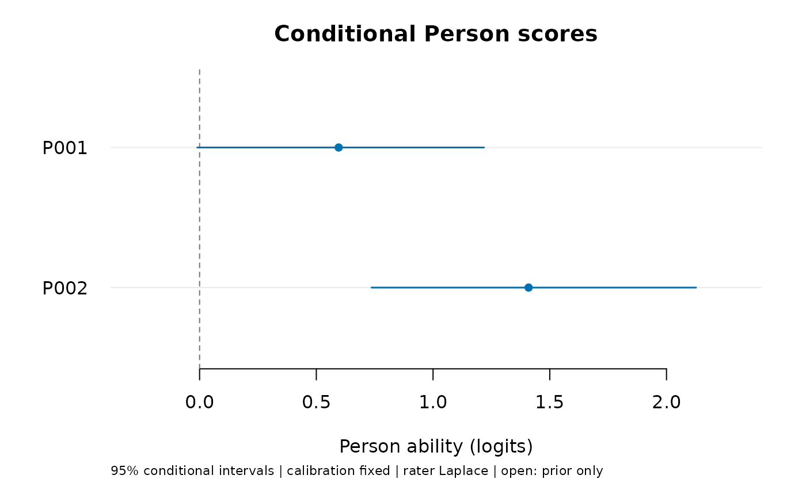

Score Persons while integrating shared random raters
Source:R/api-random-rater-scoring.R
score_mfrm_random_rater.RdCompute conditional Person scores using the complete joint scoring roster, with calibration held fixed and shared raters integrated jointly.
Usage
score_mfrm_random_rater(
object,
newdata = NULL,
persons = NULL,
level = 0.95,
quad_points = object$settings$quad_points,
missing = if (is.null(newdata)) object$settings$missing else "fail"
)
# S3 method for class 'mfrm_random_rater_scores'
summary(object, ...)
# S3 method for class 'mfrm_random_rater_scores'
print(x, ...)Arguments
- object
A numerically ready
fit_mfrm_random_rater()result.- newdata
Complete long-format scoring roster, with the fitted columns.
NULLuses the source roster. A supplied table replaces the source roster; it is not appended to it. New Person and rater IDs are allowed, but fixed facet levels must be known. Include all responses intended to inform the shared raters, including responses of Persons not selected for display.- persons
Character vector of distinct Person IDs to return;
NULLreturns all Persons in the scoring roster. This selects outputs, not data.- level
Conditional equal-tail interval probability; default 0.95.
- quad_points
Other-Person quadrature order, 7 to 241; default uses the fit's order. Scores are checked at
2 * quad_points + 1points.- missing
"fail"or"omit". Source replay uses the fit's policy; omission in a supplied roster must be requested explicitly.- ...
Unused.
- x
A scoring result.
Value
An mfrm_random_rater_scores object with table, complete scoring
roster, data accounting, settings and source metadata for mfrm_results().
Save it with saveRDS(). Its summary and plots need no live optimizer.
Details
For each requested Person, the other Persons' abilities are integrated by quadrature. At each value of the requested ability, the full shared-rater vector is integrated by a conditional Laplace approximation. Multiplying this likelihood by the normal ability density and normalizing gives an approximate continuous marginal posterior. EAP, posterior SD and equal-tail endpoints are calculated from that density. Neither independent rater marginals nor rater modes substituted as known values define this calculation.
Writing \(L_j(u)\) for Person j's likelihood integrated over that Person's normal ability population, the target for Person p is $$q_p(t) \propto \phi_p(t) \int \phi_r(u) P(y_p\mid t,u) \prod_{j\ne p} L_j(u)\,du.$$ Calibration arguments are suppressed in this expression. The rater integral is approximated separately at each t, and the resulting density is normalized over t; a rater mode is not held fixed across t.
InterpolationDifference checks refinement of the continuous density,
and IntegrationDifference compares other-Person quadrature orders.
Small values do not bound the separate rater Laplace approximation error
or establish interval coverage. Endpoints invert a continuous CDF, not the steps of
a quadrature-grid CDF. Computation grows with roster size and requested
Persons. Start with a few IDs when checking a large roster; persons = NULL
computes every Person's posterior and can be slow. Selecting outputs keeps
all scoring responses. No fixed effects or population variances are re-estimated.
Intervals condition on all supplied observed responses, fitted calibration and the fitted or specified normal ability population. They exclude calibration/population estimation uncertainty, are not fixed-ability frequentist confidence intervals and do not test Person differences. They do not qualify few-rater uncertainty or the normality and assignment assumptions. With an estimated zero rater variance they describe that fitted submodel, not certainty that rater differences are absent.
An entirely missing Person explicitly retained with missing = "omit"
returns the normal prior with status "prior_only", not a measured average
ability. Zero fitted ability variance gives "unavailable" scores rather
than zero-width intervals. Errors or unresolved numerical checks preserve
the requested Person's row and reason. No missing scores are imputed.
Older saved fits keep their original known N(0,1) ability population.
If an older fit omitted scores without saving the original roster, supply
that roster explicitly to retain its unobserved Persons and row accounting.
Numerical evidence
An independent joint-posterior comparison at fixed calibration covered three-category RSMs with six or 24 raters and rotating or weakly linked assignments. Eight scoring rosters contained 240 Persons and 1,440 responses; four reduced rosters contained 48 Persons and 96 responses. The 48 selected EAPs and posterior SDs met a 0.05-logit numerical tolerance, including Monte Carlo uncertainty. Conditional-CDF calculations using the saved joint rater draws supported the stated 0.10-logit tolerance for all 96 interval endpoints, allowing for Monte Carlo and numerical error.
These are bounded numerical comparisons, not universal accuracy bounds or
performance cutoffs. They do not establish repeated-sampling 95 percent
coverage when calibration is estimated, qualify the calibration likelihood,
or test Person differences. See vignette("mfrmr-random-raters") for the
reference-precision limitations and interpretation.
Examples
example <- readRDS(system.file("examples", "extended-models.rds", package = "mfrmr"))
fit <- example$random_rater$fit
scores <- example$random_rater$scores
# To recompute (requires RTMB >= 2.0 and can take several minutes):
# scores <- score_mfrm_random_rater(fit, persons = c("P001", "P002"))
# The complete source roster still informs both selected Persons.
scores$table
#> Person Observed Raters Estimate ConditionalSD Lower Upper
#> 1 P001 16 4 0.5958329 0.3131345 -0.01012551 1.218316
#> 2 P002 16 4 1.4094427 0.3543709 0.73648703 2.126690
#> Status IntegrationDifference InterpolationDifference Reason
#> 1 available_conditional 4.136950e-09 9.924565e-08
#> 2 available_conditional 4.415369e-09 3.024751e-09
plot(scores)

mfrm_results(fit, scores = scores, compute = "never")
#> mfrmr Results Summary
#>
#> Overview
#> Model Method N Persons
#> Shared-rater RSM MML: Person quadrature and shared-rater Laplace 768 48
#> Tables PlotRoutes
#> 20 3
#>
#> Decision
#> - Interpretation: Numerical checks satisfied; model adequacy not assessed
#> - Formal inference: Target-specific limits; no general clearance
#> - Why: Numerical checks are not model-fit diagnostics or evidence of rater
#> quality.
#> - Next: Review numerical checks, interval meanings and the rating design.
#>
#> Workflow readiness
#> Domain Status
#> Model adequacy Not assessed
#>
#> Triage
#> Area Severity
#> Interpretation Review
#>
#> Triage details
#> - Interpretation: Numerical checks satisfied; model adequacy not assessed
#>
#> Plot routes
#> Type Available
#> raters TRUE
#> intervals FALSE
#> scores TRUE
#> comparison FALSE
#> response_comparison FALSE
#> response_diagnostics FALSE
#> wright TRUE
#> fit_pathway FALSE
#> RequiredArtifact
#> Fitted raters
#> Matching saved bootstrap intervals
#> Matching saved Person scores
#> Matching saved extended-model comparison
#> Matching saved predictive comparison
#> Matching saved response diagnostics
#> Matching source-roster Person scores
#> Matching posterior diagnostics and located groups
#>
#> Plot commands
#> - raters: plot(res, type = "raters")
#> - intervals: plot(res, type = "intervals")
#> - scores: plot(res, type = "scores")
#> - comparison: plot(res, type = "comparison")
#> - response_comparison: plot(res, type = "response_comparison")
#> - response_diagnostics: plot(res, type = "response_diagnostics")
#> - wright: plot(res, type = "wright")
#> - fit_pathway: plot(res, type = "fit_pathway")
#>
#> Next actions
#> Priority Area
#> 1 Interpretation
#>
#> Action details
#> - Interpretation: Review numerical checks, interval meanings and the rating
#> design. Route: res$tables$numerical_checks; res$tables$interval_basis;
#> res$tables$section_status
#>
#> Notes
#> - Numerical checks are not model-fit diagnostics or evidence of rater quality.
#> - No fitting, scoring, diagnostics or resampling is performed while collecting
#> or exporting these results.
#> - Missing assigned scores and absent assignments are different: omitted rows
#> are recorded; absent rows are not imputed.
#> - Individual-rater intervals are not supplied automatically; nominal coverage
#> remains unresolved. PredictionSE is a first-order approximation, not a
#> rater-quality classification.
#> - Probability predictions use supplied abilities; each row is marginal, not a
#> joint rating distribution. Saved Person scores use joint conditional rater
#> Laplace integration, holding calibration fixed; numerical agreement does not
#> certify approximation accuracy or coverage.
#> - Ordinary residual diagnostics, response-MI pooling, portable calibration and
#> the Shiny viewer are unavailable for these model classes. Extended
#> Wright/pathway maps use explicitly matched saved scores and posterior
#> diagnostics.